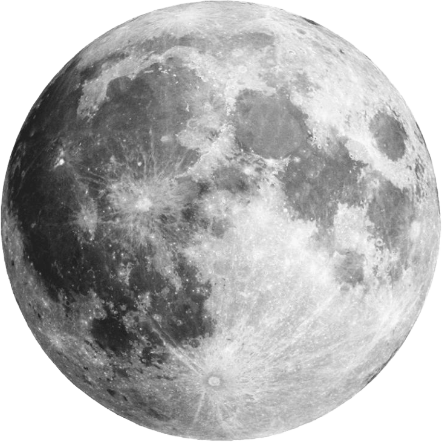
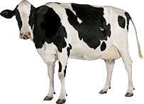
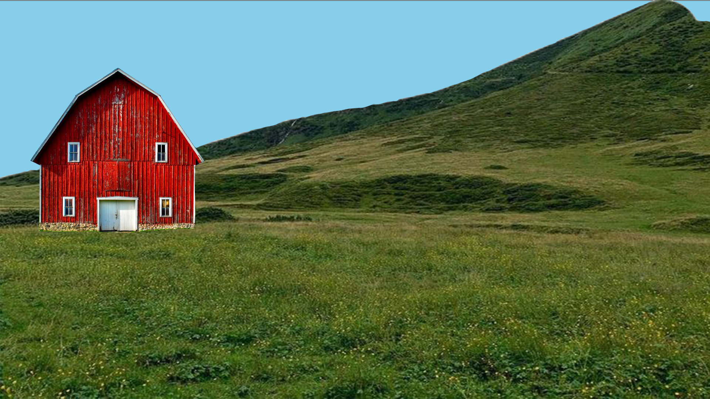

. +. +. . +
. . * . + . . ' . * .
+. + ' .
. | * . o +. ' . '
-+- . . o . '* ' '
| + + .+ '
+ . o | +_|_ * . +
+ * o. - o - . | . +' ' o
* . ' | + * + . . | '
. ' o * --o--
. _|_ ' ' ' |
| . + o | '
. ' . . ' * ' * + - o - ' '
_|_ ' .. o + |
' | + o . . | o + .++ + + ' .:'
+ _|_ . . -o- _.::' .
| * | '' ' . ' (_.' ' '
+ _|_ . . o . . ' + + +'+~~
' o' .' | . o . ' + . +o + | ' ' +
* . ' '. '+ ' + o - o - .o o o
+ | o | +
' ' . - o - ._| + ' ' . o
' ' ' . -o-
. . . ' ' .-. ' ._|_. . | . ' +
* + ) ) | + + + . | +.
_|_ ' o '-´ * * --o--.
| +. ' ' o o o | ' | ' '
+ . + | * | . -+- . . .
| ' - o - | * -o- |
'-o-. + | --o-- | | . ' '
| . + . | o +* --o-- . +
. + + . / | . o + | .+
o . / . . _|_ -+-. o
. ** o + . ' . o | ' ' | .
' + ' . . *
o ' . | . + . .o ' * o
' ' + ' + o -+- . o
+ + + . + ' | +
' * o .. * * | _|_ + +
' .:' . * o . + . -+- . | | '
_.::' ' | *.' + | | . o + - o -
(_.' * . | --o-- * ' . -o- '' ' |
-+- | ' + | . . . _|_
* * ' .. * | | ' * . o +. o |
' . . . . -+- o _|_ * ' .
.' | ' | . .' .
+ . o . ' ' * ' | '. +
. + + | . ' . * + ' --o-- . '
o ' --o-- . . | * + | . '
| | o ' + ' - o - |
o ' +--o-- . | | + | - o - o
' ' | * - o - ' o -+- .+ + | | |
o + + _|_ + * | . ' | . + --o-- --o--
. | ' ' . + + . .. | |
+ + . . ' ' +
. . . o * * * ''' . | .
. | * ' . . . ' .- o -
--o-- ' | . | +
' . . ' * | ' ' -+- ' * * .
* .+ | ' . .* . o
+ ' ' +
* . ' | o .
. . * --o-- *. . . . o
+ | * o o | .*
' + . -+- . ' . + + o
.+ | | o' . ' + o '
* . --o-- o * . * '. . ' . *
o ' | . . .' + ~~+ ' o. +' .
'o+ . . .
+ ' o . . ._|_ o. * .
+ | . . . ' _ ' | +
. | ' | . + ' . + + -+-
' . . o ' ' . + . |
' + . . * . |
. + | . o . --o--
+ -o- * + . ' | . |
* | | | * * ..-o- ' .
| * - o - + * -+- .. | .. . . ..
' -o- ' | ' + | .
+ | *._|_ . o . * + | ' ' | .
| + + .. o o . .-. - o - ' - o - o
+ o o ' ) ) | . |
o' ' ' | o + ++ '-´ _|_ . | '+
--o--+' ' o ' | -+- '
' . / . * . | ' + . * + | . '
/ + . * + . o + . *
' .* + . ' *' . ' . . '
. . ' . . '
+ | | . . * |
. | o - o -' '+ ' - o - . -+- o'
' -o- ' | + + | | * + +
| | . _|_ o. ' . | +
- o - . ' | * . ' . . ' - o -
| * o .' + . ' . . | o * |
o o* ' . + '..-o-' ' .
. ' | . ' . |
' o -o-+ + ' | . *
o o | -o- | ' o '' . +
' * o | ' | -o-- ' + ' . +
+ ' ' + - o - | + | ' .
+ . | * o + . . ' - o - ' .
. * '' . o | '
o . '' ' . .
' + o . * . '
o o | ' ' + . + . o |
' -+- . . + + * - o - o .
. | | o . |
' -+- * * .
+ | + . . '
| . . . . + . o .
- o - . ' * + + '
| . o + + + . o
+. + o . \
+ ' o ' . ' + . .' \ '
+ + * o ' * .
. . . . .
+ + * . + + | . * | o
. '. ' ' - o - .+ . . -o- .
* ' +' + | + ' |
. .. '+ o . ' ' o + +
o . o . . o + o . .
+ o . . . . '
o * * o
+ * + o +
' . o . *o . + '
. * o ' . . '
. ' . o '
' ' . .' ' . .
.. / ++ + .
.+o + / + ' . . + .
* '* ' o ' ' ' ' ' +
| . o + ' + ' | +
o - o - o ' . . o +-o- o |
' | . o .' | + -+-
' ' | ' | + * + | |
+' + * -o- + --o-- o -+-
* . * | | |
. ' + ' + + . * _|_ '
' + + o ' ' |
. + .+ + .
o ' * * ' . . . o + . . + . .
' + . . . . o . ' ' o +
.. . . . + + + *
. + +. o /+ o +' ' o .
' ~~+ _|_ ' | / + +. +
| . + ' - o - * ' o
. ' ' . . | . ' ' o ' .
+ . . + + + . * . '

